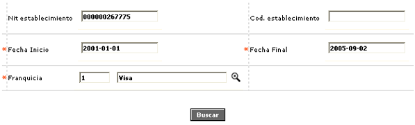
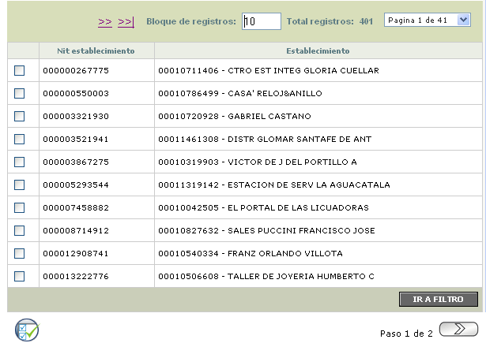
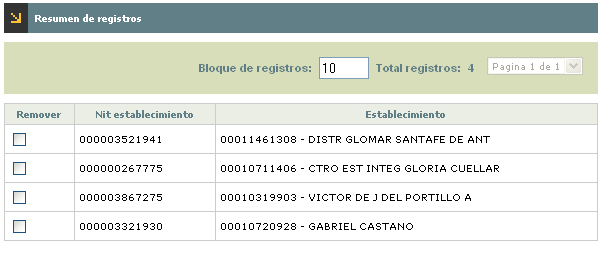

Generación certificados retefuente
Este formulario le permite a la entidad generar los certificados de retención en la fuente para los establecimientos propios.
Al ingresar al formulario se despliega un filtro que le permite al usuario seleccionar los criterios para consultar los establecimientos a los cuales se les requiere generar el certificado.

Descripción de campos
Nit establecimiento |
En este campo alfanumérico de hasta 16 caracteres, se ingresa el número del nit correspondiente al establecimiento que se desea consultar. |
Código establecimiento |
Campo numérico de hasta 11 caracteres en el cual se ingresa el código único que identifica al establecimiento que se desea consultar. |
Fecha inicio |
Este campo obligatorio permite ingresar en formato YYYY-DD-MM la fecha inicial a partir de la cual se desea consultar la información sobre las retenciones practicadas a los establecimientos. |
Fecha final |
Campo obligatorio en formato YYYY-DD-MM en el que se registra la fecha final hasta la que se desea consultar la información sobre las retenciones practicadas a los establecimientos. |
Franquicia |
En este campo obligatorio con lista de valores se selecciona la marca o franquicia para la cual se desea consultar las retenciones de los establecimientos. |
Una vez ingresados los criterios para la búsqueda, se despliega un wizard de dos pasos. En la primera página se muestran el nit y el nombre de cada uno de los establecimientos que coinciden con los criterios ingresados y para los cuales existe información para generar el certificado de retención en la fuente.

El formulario cuenta con un campo en el cual se marcan aquellos registros para los cuales se desea generar efectivamente el certificado y contiene además con un botón que permite seleccionar todos los registros.
Una vez seleccionados los registros, el usuario se desplaza a la segunda página del wizard en la que se muestra un formulario con el resumen de los establecimientos para los cuales se va a generar el archivo con los certificados; este formulario contiene el nit, el nombre del establecimiento y una casilla para marcar aquellos registros a los cuales no se les va a generar certificado.

La segunda página del wizard contiene un botón especial a través del cual se genera el archivo para los establecimientos.
Botones especiales
Seleccionar todos: botón ubicado en la primera página del wizard y que permite seleccionar simultáneamente todos los registros encontrados por la búsqueda, sin importar si se encuentran o no visibles para el usuario en el formulario.

Generar archivo : botón ubicado en la segunda página del wizard y que permite generar el archivo para imprimir los certificados de retención en la fuente para los registros seleccionados por el usuario.